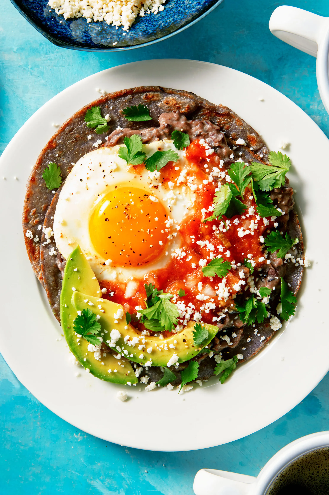

Huevos Rancheros

Huevos rancheros is a Mexican breakfast classic with
roots tracing back to rural farm living. It literally translates to
"rancher's eggs." You'll find a plethora of variations throughout Mexico and the diaspora,
with many of them boiling down to four things: tortillas, beans, eggs, and homemade salsa.
This recipe is super adaptable. Blue corn tortillas are beautiful but yellow work too.
You can switch up the serrano chiles for jalapeños or another green chile. The black beans can be swapped for pinto beans,
or streamline with store-bought refried beans. And if sunny-side yolks aren't your thing,
you can give the eggs a flip halfway through frying or opt for scrambled eggs instead.
Ingredients
Salsa
- 3 large plum tomatoes, halved
- 1 serrano chile, halved, seeds removed
- 2 garlic cloves, finely chopped
- ¼ cup finely chopped white onion
- 3 Tbsp. finely chopped cilantro
- 2 Tbsp. extra-virgin olive oil
- 1½ tsp. Diamond Crystal or 1 tsp. Morton kosher salt, plus more
Refried Beans
- ½ cup (1 stick) unsalted butter
- 2 garlic cloves, finely chopped
- 1 tsp. Diamond Crystal or ½ tsp. Morton kosher salt
- 1 tsp. dried oregano
- 1 tsp. ground cumin
- Freshly ground pepper
- 1 15.5-oz. can black beans, rinsed
Eggs and Assembly
- 4 Tbsp. unsalted butter, divided
- 6 large eggs
- Kosher salt, freshly ground pepper
- 12 small corn tortillas, preferably blue
- Finely crumbled Cotija cheese, sliced avocado, and cilantro leaves (for serving)
Steps
- Heat broiler. Line a rimmed baking sheet with foil; arrange 3 large plum tomatoes, halved,
and 1 serrano chile, halved, seeds removed, cut side down, in the center.
Broil until tomato skins are browned in spots and chile is deeply charred, 6-8 minutes.
- Transfer chile to a cutting board. Turn tomatoes cut side up and continue to broil until browned in spots on top,
about 5 minutes more. Let tomatoes cool slightly. Finely chop chile.
- Transfer tomatoes and chile to a molcajete. (Alternatively, you can use a small bowl and a potato masher or fork.)
Add 2 garlic cloves, finely chopped, ¼ cup finely chopped white onion, 3 Tbsp. finely chopped cilantro, 2 Tbsp.
extra-virgin olive oil, and 1½ tsp. Diamond Crystal or 1 tsp. Morton kosher salt and smash to a chunky textured paste.
Taste salsa and season with more salt if needed. Set aside.
- Melt ½ cup (1 stick ) unsalted butter in a medium saucepan over medium-high heat.
Add 2 garlic cloves, finely chopped, 1 tsp. Diamond Crystal or ½ tsp. Morton kosher salt, 1 tsp.
dried oregano, and 1 tsp. ground cumin; season with freshly ground pepper. Cook, stirring, until fragrant, about 1 minute.
Stir in one 15.5-oz. can black beans, rinsed, and ¼ cup water and bring to a simmer. Mash beans with a potato masher or fork until mostly smooth.
Continue to cook, stirring often, until most of the liquid has evaporated, about 2 minutes.
Beans should be risotto-like in consistency (loose enough to fall off a spoon). If beans are too thick, add a splash more water.
Remove from heat, cover, and keep warm.
- Heat 3 Tbsp. unsalted butter in a large nonstick skillet over medium until melted and bubbling. Crack 3 large eggs into pan,
leaving a couple of inches around each to keep them from sticking together. Cook until whites are set but yolks are still runny, about 4 minutes.
Transfer to a large plate. Add remaining 1 Tbsp. unsalted butter to pan and repeat cooking process with remaining 3 large eggs.
Transfer eggs to plate; season with kosher salt and freshly ground pepper.
- Wipe out skillet and set back over medium heat. Working in batches as needed, toast 12 corn tortillas, preferably blue,
until warm and browned in spots, about 1 minute per side.
- To assemble, place 2 tortillas on each plate. Generously spread refried beans over tortillas and top each plate with a fried egg.
Top with reserved salsa, then finely crumbled Cotija cheese, sliced avocado, and cilantro leaves as desired.
Home